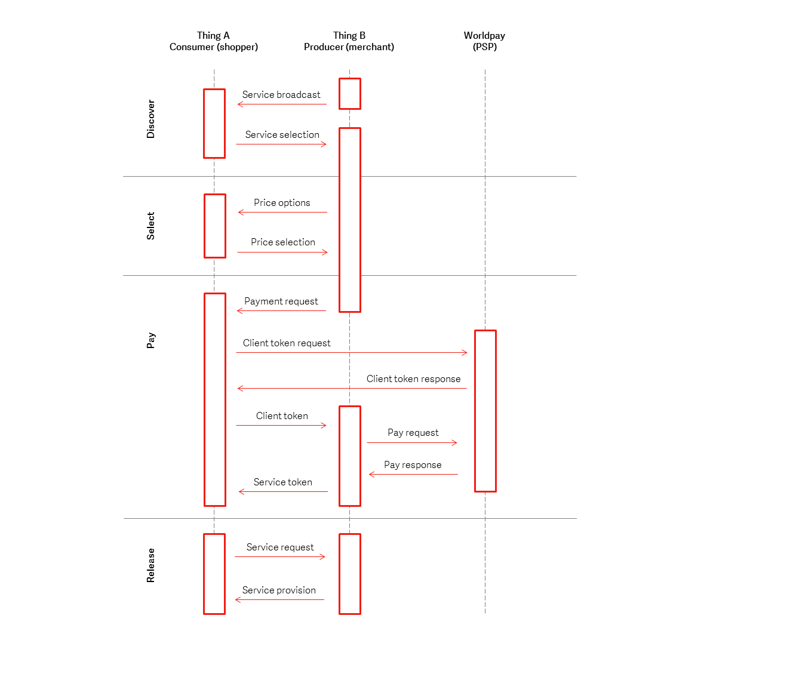

Python
The Python implementation for the Worldpay Within IoT payment SDK. This SDK enables smart devices to discover each other, negotiate a price for services, make a payment (through Worldpay) for services, and then consume services via a trusted trigger. For an overview, see Home.
Prerequisites¶
Before you get started:
- Install Python on your system. We've built the SDK to work with version 2.7.
- If you do not have it, install git.
- Verify that the command
pythonis available to run without specifying the whole path and update the PATH environment if required. - On some UNIX operating systems, such as Debian, you must additionally install setup tools:
sudo apt install python-setuptools - Create an account with Worldpay Online so that you can generate your own test API key. You'll replace the Worldpay test keys with your own in the SDK.
Warning
Make sure you only use test API keys.
Get started¶
- Clone the repository:
git clone https://github.com/WPTechInnovation/wpw-sdk-python.git - Change to the directory (for example,
cd wpw-sdk-python) - Run
git submodule update --init --recursive - As an administrator, run
sudo python setup.py install
Run the examples¶
You can try the examples by running them in two different console windows. Or, if you're installing on two separate devices, they must be on the same network that allows UDP broadcast traffic. Make sure you're using rhw Online Worldpay (OWP) files rather than the Worldpay Total (WT) ones.
- In the first window, run:
python runProducerOWP.pyorpython runProducerCallbacksOWP.py - In the second window, run:
python runConsumerOWP.py - The two smart devices should communicate with each other and make a payment.
Creating your own keys¶
You can do this whenever you want, but you're going to need to create your own API keys. These keys allow you to simulate payments and see the outcome, rather than just using the keys Worldpay included in their SDKs.
Warning
Make sure you only use test keys.
To add your own test API keys:
- Login to Worldpay Online.
- Go to Settings.
- Then click API Keys.
- Grab your Service key and Client key. They'll look something like this:
T_S_fd00db67-b77b-4d6e-1a2a-45f65123f795. - Find the config folder of the SDK and find the producer JSON files.
- Add your Service and Client keys:
- The
pspConfig.merchant_client_keyandpspConfig.hte_public_keymust have the same key. - The
pspConfig.merchant_service_keyandpspConfig.hte_private_keymust have the same keys.
- The
- Save your work.
Once you've added your own test keys, you'll be able to start testing your payments.
Seeing your payments¶
Now that you've added your own test keys to the producer config files, you can start testing your payments. Refer to the Run the examples topic for more information about this.
To see your test payments:
- Login to Worldpay Online.
- On the homepage, scroll down to the Recent Orders section.
- Your payments are here. You'll be able to see:
- Order Code - The order code
- Customer Order Code - The customer's order code
- Gross Amount - The gross amount of the order
- State - The state of the order. For example, SUCCESS or AUTHORIZED
- Payment type - The type of payment. For example, ECOM
- Order type - The type of order. For example, VISA_CREDIT or VISA_DEBIT
- Updated - The last time the payment state changed
For more information, refer to the Worldpay Online documentation.
Debugging¶
If you're having trouble, you can contact us at Innovation@Worldpay.com. Alternatively, you can raise an issue in GitHub.
So what's happening?¶

You can see there are four phases; Discover, Select, Pay, and Release. For more information, see Worldpay Within.
What IoT devices can I run this on?¶
Note
The devices need to be on the same network - and that network should allow for UDP broadcast traffic. Most mobile hotspots allow this; a lot of corporate networks do not...
Want to contribute?¶
If you want to contribute, clone the repository and create a branch. Once you've made your changes, create a pull request. We'll review your code, and if accepted it will be merged into the code base. It's worth checking out the Internal Structure of Worldpay Within and Sample Service Messaging pages if you want to learn more about how Worldpay Within works.
You can also raise an issue in GitHub, or contact us directly at Innovation@Worldpay.com.